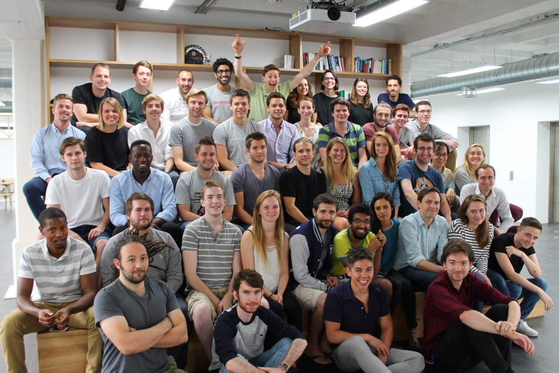
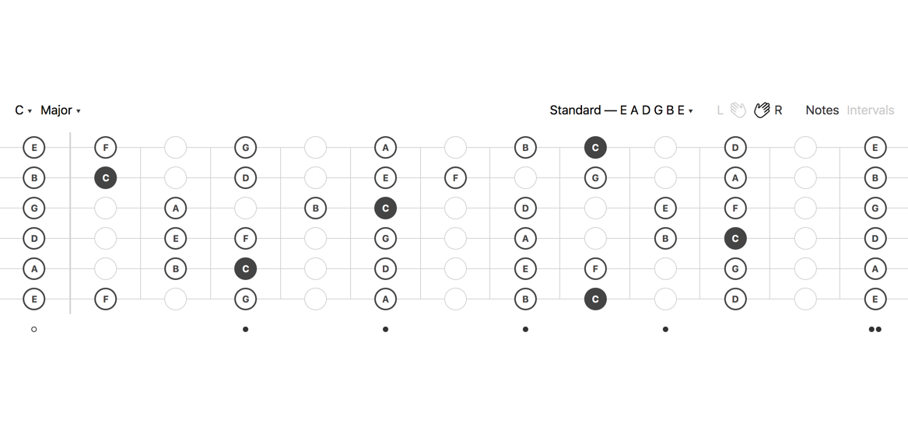
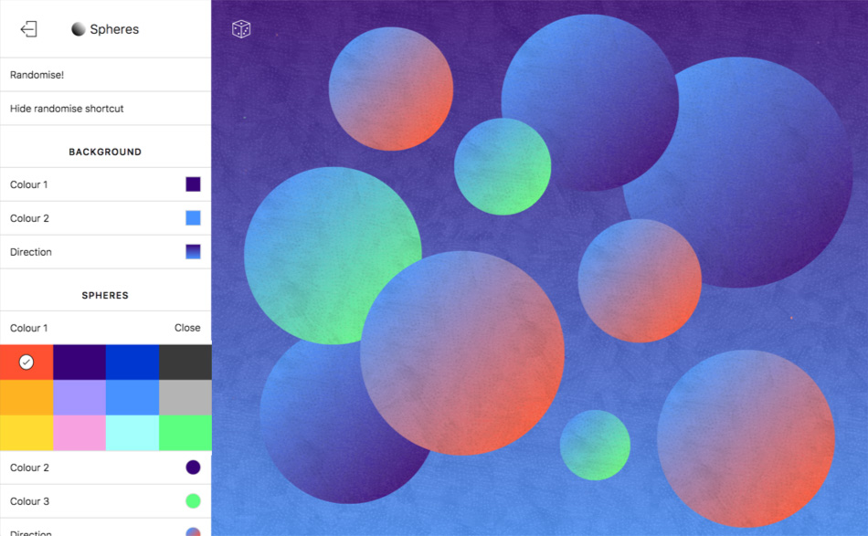
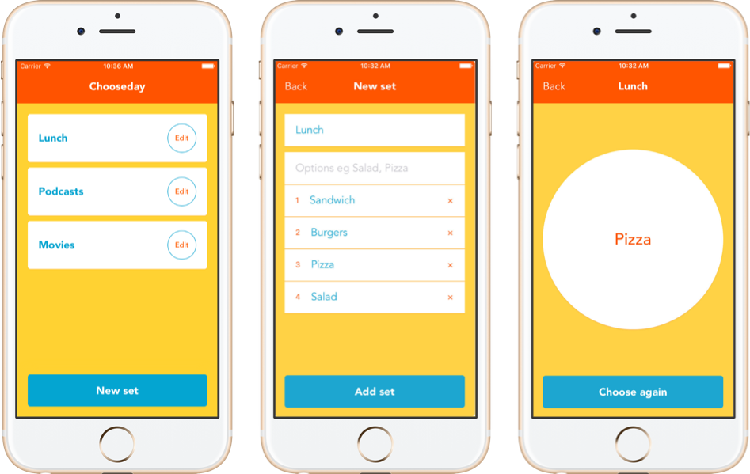
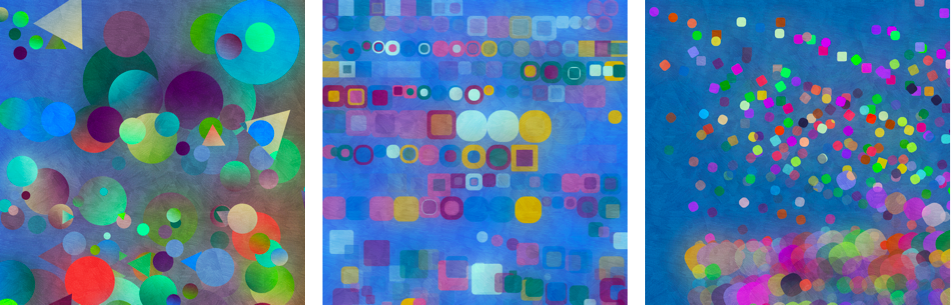
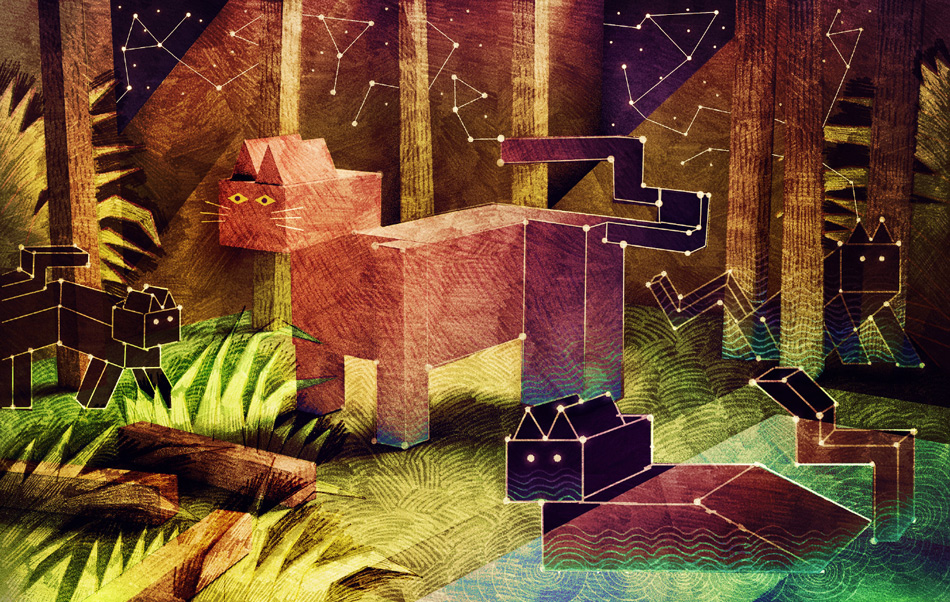

James Shedden
I’m a software engineer, designer, illustrator and musician based in London. I love building user experiences, adding impact to products & teams and learning new things. Get in touch at hi@james.sh or @jamesshedden.
GoCardless
I’ve worked at GoCardless for over five years and have enjoyed designing & building impactful features, helping to define & improve the working processes of the teams I’ve been on and learning a massive amount along the way.
I’ve worked in both generalist & specialist roles doing web & product design and front & back end software engineering.
Frets
Frets is a minimal, responsive web app I designed & built with React for quickly displaying the locations of all the notes or intervals of a given scale on a guitar fretboard. Visit frets.fyi
Spheres
Spheres is an experimental web app I designed & built with React for creating colourful compositions using spheres. My aim was to make something both playful and meditative. Visit spheres.cool
Chooseday
Chooseday is a simple mobile app that I designed and built with React Native and released on the iOS App Store for choosing one item from a group of things, e.g. lunch options. View Chooseday on the App Store
Dots Bot
Dots Bot is a Twitter bot I created that creates randomly generated compositions of colourful shapes and tweets them out at regular intervals. View Dots Bot on Twitter
Illustration
I studied Illustration at university and although I chose a different career I still love making images. My work uses a combination of modelmaking, drawing, painting & photography. You can see more of my illustrations at Flickr and Instagram.
Music
I write, record & produce songs under the name Donald Patrick. Have a listen to my music at SoundCloud.
Writing
You can read a few things I've written over at Medium.